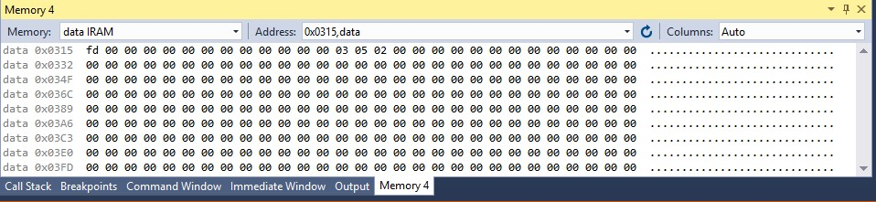
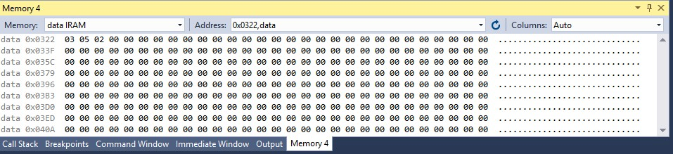
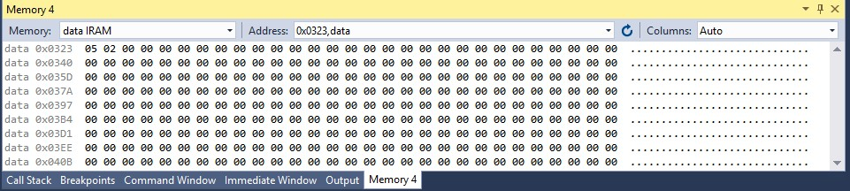
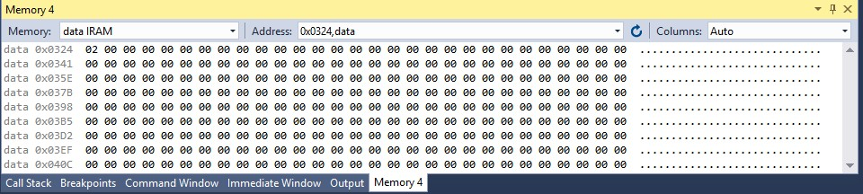

รายงานการทดลอง: การแปลงเลขฐานสิบหกเป็นทศนิยมด้วยวิธีลบซ้ำการวิเคราะห์และจำลองการคำนวณระดับคาบเวลาของคำสั่งคอมพิวเตอร์ (Example 5-8)
ผู้จัดทำ:
|
ในสถาปัตยกรรมไมโครคอนโทรลเลอร์ขนาดเล็ก เช่น AVR ATmega328P ซึ่งจัดเป็นหน่วยประมวลผลแบบ RISC ไม่มีชุดคำสั่งฮาร์ดแวร์สำหรับหารเลข (Hardware Division) มาให้ในตัวชิป มีเพียงคำสั่งคูณ (MUL) เท่านั้น ดังนั้น การดำเนินการหารข้อมูลในระดับซอฟต์แวร์จึงมีความจำเป็น โดยวิธีพื้นฐานที่มีประสิทธิภาพและสิ้นเปลืองทรัพยากรระบบต่ำที่สุดสำหรับข้อมูลขนาด 8 บิต คือ วิธีการหักลบออกซ้ำ ๆ (Repeated Subtraction) ด้วยตัวหาร
โปรแกรมจำลอง Example 5-8 นี้ ทำหน้าที่แปลงข้อมูลเลขฐานสิบหกขนาด 8 บิต (ในที่นี้คือค่า 0xFD หรือ 253 ในระบบเลขฐานสิบ) ซึ่งอ่านมาจากแรม SRAM ตำแหน่ง 0x315 ให้กลายเป็นเลขฐานสิบแยกหลัก BCD จำนวน 3 หลัก เพื่อนำไปเตรียมแสดงผล โดยหลักการทำงานจะแบ่งการคำนวณออกเป็น 2 รอบหลัก ดังนี้:
1. การหารอบที่ 1 (หาหลักหน่วย): นำค่าตัวตั้งเริ่มต้น (253) มาหักลบออกด้วยตัวหารคงที่ 10 ไปเรื่อย ๆ ในลูป L1 พร้อมทั้งนับจำนวนครั้งที่หักลบได้สะสมไว้ในตัวแปรผลหาร (Quotient) เมื่อผลลัพธ์การลบมีค่าต่ำกว่าศูนย์ (เกิด carry flag = 1 จากการกู้ยืม) วงจรจะออกจากลูป จากนั้นชดเชยค่าผลหารที่นับเกินไป 1 ครั้ง และบวกตัวหาร 10 คืนกลับไปที่ตัวตั้งเดิมเพื่อหาเศษที่เหลือ เศษลัพธ์สุดท้ายนี้คือ ตัวเลขหลักหน่วย (ค่า 3) ซึ่งจะบันทึกเก็บลงแรมตำแหน่ง 0x322 ส่วนผลหารรอบนี้ (ค่า 25) จะถูกส่งไปคำนวณในรอบถัดไป
2. การหารอบที่ 2 (หาหลักสิบและร้อย): นำผลหารที่ได้จากรอบแรก (25) มาตั้งเป็นตัวตั้งใหม่ ทำการหักลบด้วยตัวหาร 10 ซ้ำในลูป L2 ในลักษณะเดิม เศษที่เหลือหลังการลบจนเกิดค่ายืมจะกลายเป็น ตัวเลขหลักสิบ (ค่า 5) นำไปบันทึกที่ตำแหน่ง 0x323 และผลหารที่เหลือสุทธิรอบนี้จะกลายเป็น ตัวเลขหลักร้อย (ค่า 2) บันทึกลงตำแหน่ง 0x324 สิ้นสุดขั้นตอนโปรแกรม
ซอร์สโค้ดแอสเซมบลีสำหรับชิปไมโครคอนโทรลเลอร์ ATmega328P ซึ่งผ่านการตรวจสอบความถูกต้องและคอมไพล์สำเร็จ:
;==================================================================== ; exercise_5_8.asm ; แปลงค่า Hex 8 บิตที่ตำแหน่ง 0x315 เป็นตัวเลขทศนิยม (BCD) 3 หลักในแรม ;==================================================================== .include "m328pdef.inc" ; นำเข้าไฟล์ระบุนิยามของขาและรีจิสเตอร์ชิป .list ; แสดงการออกไฟล์แจกแจงรายการคอมไพล์ (.lst) rjmp main ; เริ่มต้นข้ามไปยังส่วนโปรแกรมหลักหลังสัญญาณ Reset .EQU HEX_NUM = 0x315 ; ตำแหน่ง SRAM ที่เก็บเลขต้นทาง (0xFD = 253) .EQU RMND_L = 0x322 ; ตำแหน่ง SRAM เก็บเศษหลักหน่วย .EQU RMND_M = 0x323 ; ตำแหน่ง SRAM เก็บเศษหลักสิบ .EQU RMND_H = 0x324 ; ตำแหน่ง SRAM เก็บเศษหลักร้อย .DEF NUM = R20 ; ตัวแปรเก็บตัวเลขคำนวณสะสม .DEF DENOMINATOR = R21 ; รีจิสเตอร์เก็บค่าคงที่ 10 (ตัวหาร) .DEF QUOTIENT = R22 ; รีจิสเตอร์เก็บผลหารสะสมประจำรอบ main: LDI R16, 0xFD ; โหลดตัวเลข 253 (0xFD) ลงใน R16 STS HEX_NUM, R16 ; บันทึกค่านำเข้าไว้ในหน่วยความจำตำแหน่ง 0x315 LDS NUM, HEX_NUM ; ดึงค่าจาก 0x315 มาพักในรีจิสเตอร์หลัก NUM LDI DENOMINATOR, 10 ; กำหนดค่าตัวหารคงที่เท่ากับ 10 CLR QUOTIENT ; ล้างค่าสะสมผลหารเริ่มแรกให้เป็น 0 L1: INC QUOTIENT ; บวกเพิ่มผลหารประจำรอบขึ้น 1 ครั้ง SUB NUM, DENOMINATOR ; ทำการลบตัวตั้งออกด้วยตัวหารคงที่ 10 BRCC L1 ; วนซ้ำลูป L1 หาก Carry Flag เป็น 0 (NUM >= 0) DEC QUOTIENT ; หักลบชดเชยรอบผลหารที่เกินไป 1 ครั้ง ADD NUM, DENOMINATOR ; บวกตัวหารกลับคืนเพื่อรับค่าเศษเหลือหลักหน่วย STS RMND_L, NUM ; บันทึกผลหลักหน่วย (3) ไว้ที่ SRAM 0x322 MOV NUM, QUOTIENT ; ย้ายผลหารรอบที่แล้ว (25) มาตั้งเป็นตัวตั้งใหม่ LDI QUOTIENT, 0 ; ล้างผลหารรอบใหม่เพื่อเตรียมตัวนับในลูป L2 L2: INC QUOTIENT ; บวกเพิ่มผลหารประจำรอบขึ้น 1 ครั้ง SUB NUM, DENOMINATOR ; หักลบออกด้วย 10 ซ้ำ BRCC L2 ; วนซ้ำลูป L2 หาก Carry Flag เป็น 0 DEC QUOTIENT ; หักลบชดเชยรอบผลหารที่เกินไป 1 ครั้ง ADD NUM, DENOMINATOR ; บวกคืนค่าคงที่ 10 เพื่อรับเศษเหลือหลักสิบ STS RMND_M, NUM ; บันทึกผลหลักสิบ (5) ไว้ที่ SRAM 0x323 STS RMND_H, QUOTIENT ; บันทึกผลหลักร้อยสุทธิ (2) ไว้ที่ SRAM 0x324 here: rjmp here ; วนจบลูปค้างไว้ตลอดไป
การวิเคราะห์เชิงลึกผ่านการจำลองโปรแกรมจำลองของ Atmel Studio 7.0 พบพฤติกรรมของสเตตและรีจิสเตอร์ในจังหวะสำคัญ ๆ ดังตารางบันทึกการประมวลผล (SRAM Trace) ด้านล่าง:
| คาบเวลา (Cycle) | PC | คำสั่ง (Instruction) | สถานะของรีจิสเตอร์ | ค่าใน SRAM ปัจจุบัน | Carry |
|---|---|---|---|---|---|
| 0 | - | - (ก่อนเริ่มโปรแกรม) | R16=00, NUM=00, DENOM=00, QUOT=00 | - | 0 |
| การคำนวณในลูป L1 (หักลบค่าครั้งที่ 1, 25 และ 26 ตามลำดับ) | |||||
| 7 | 0x0007 | INC QUOTIENT (รอบที่ 1) | R16=FD, NUM=253, DENOM=10, QUOT=01 | [0x315] = 0xFD | 0 |
| 8 | 0x0008 | SUB NUM, DENOMINATOR | R16=FD, NUM=243, DENOM=10, QUOT=01 | [0x315] = 0xFD | 0 |
| 80 | 0x0008 | SUB NUM, DENOMINATOR (รอบ 25) | R16=FD, NUM=3, DENOM=10, QUOT=25 | [0x315] = 0xFD | 0 |
| 82 | 0x0007 | INC QUOTIENT (รอบที่ 26) | R16=FD, NUM=3, DENOM=10, QUOT=26 | [0x315] = 0xFD | 0 |
| 83 | 0x0008 | SUB NUM, DENOMINATOR | R16=FD, NUM=249 (-7), DENOM=10, QUOT=26 | [0x315] = 0xFD | 1 |
| 84 | 0x0009 | BRCC L1 (ไม่กระโดด) | R16=FD, NUM=249, DENOM=10, QUOT=26 | [0x315] = 0xFD | 1 |
| 85 | 0x000A | DEC QUOTIENT (ชดเชยรอบเกิน) | R16=FD, NUM=249, DENOM=10, QUOT=25 | [0x315] = 0xFD | 1 |
| 86 | 0x000B | ADD NUM, DENOMINATOR (คืนเศษบวก) | R16=FD, NUM=3 (เศษหลักหน่วย), DENOM=10, QUOT=25 | [0x315] = 0xFD | 0 |
| 88 | 0x000C | STS RMND_L, NUM | R16=FD, NUM=3, DENOM=10, QUOT=25 | [0x322] = 0x03 (บันทึกหลักหน่วย) | 0 |
| การคำนวณในลูป L2 (หารรอบที่สอง: นำ 25 มาหารต่อด้วย 10 ทั้งหมด 3 ครั้ง) | |||||
| 89 | 0x000E | MOV NUM, QUOTIENT | R16=FD, NUM=25, DENOM=10, QUOT=25 | [0x322] = 0x03 | 0 |
| 90 | 0x000F | LDI QUOTIENT, 0 | R16=FD, NUM=25, DENOM=10, QUOT=00 | [0x322] = 0x03 | 0 |
| 93 | 0x0011 | SUB NUM, DENOMINATOR (รอบ 2) | R16=FD, NUM=5, DENOM=10, QUOT=02 | [0x322] = 0x03 | 0 |
| 97 | 0x0011 | SUB NUM, DENOMINATOR (รอบ 3) | R16=FD, NUM=251 (-5), DENOM=10, QUOT=03 | [0x322] = 0x03 | 1 |
| 99 | 0x0013 | DEC QUOTIENT (ชดเชยรอบเกิน) | R16=FD, NUM=251, DENOM=10, QUOT=02 | [0x322] = 0x03 | 1 |
| 100 | 0x0014 | ADD NUM, DENOMINATOR (คืนเศษบวก) | R16=FD, NUM=5 (เศษหลักสิบ), DENOM=10, QUOT=02 | [0x322] = 0x03 | 0 |
| 102 | 0x0015 | STS RMND_M, NUM | R16=FD, NUM=5, DENOM=10, QUOT=02 | [0x322]=03, [0x323]=05 | 0 |
| 104 | 0x0017 | STS RMND_H, QUOTIENT | R16=FD, NUM=5, DENOM=10, QUOT=02 | [0x322]=03, [0x323]=05, [0x324]=02 | 0 |
ผลลัพธ์การบันทึกค่าลงหน่วยความจำประเภท SRAM ณ สิ้นสุดการจำลองของโปรแกรม ซึ่งแยกหลักออกมาเป็น BCD ได้ถูกต้อง:
| ช่วงตำแหน่งแรม (Address Block) | +0 | +1 | +2 | +3 | +4 | +5 | +6 | +7 |
|---|---|---|---|---|---|---|---|---|
| 0x0310 | 00 | 00 | 00 | 00 | 00 | FD | 00 | 00 |
| 0x0320 | 00 | 00 | 03 | 05 | 02 | 00 | 00 | 00 |
*หมายเหตุ: ที่อยู่ 0x315 เก็บค่านำเข้า FD (253) และเก็บผลลัพธ์แยกหลัก 3, 5, 2 ที่หน่วยความจำ 0x322, 0x323, 0x324 ตามลำดับ
ภาพแสดงตำแหน่งหน่วยความจำที่เกี่ยวข้องจากการจำลองการทำงานจริงใน Atmel Studio 7.0 Memory Window:



